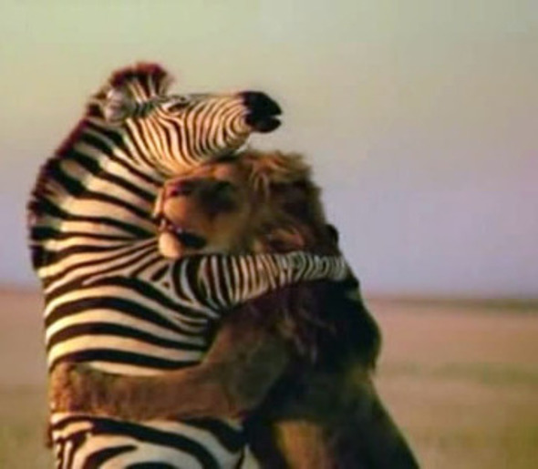
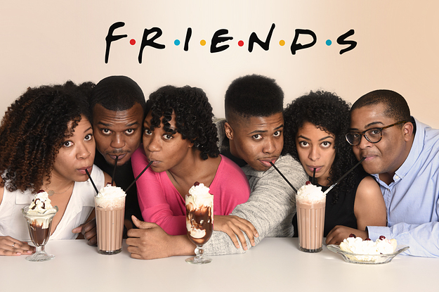

Taheerah's strengths
Future Thinker
My mind loves to think and dream about the future. I'm the type of person who thinks about what is possible, not what is impossible. (sometimes)
I like to imagine the life you will have, what new things will be invented, and what i will be able to do that you cannot do now. What kind of person will i be? How will the world be different in 10 years or 100 years? What are my dreams? Your visions of the future might be bigger than most peoples because thinking big is one of your talents.
Presence
You were born to be at the front of the room telling stories and taking the lead. Other people watch you and listen to you.
You might tell a funny joke or story that helps others relax and feel connected to each other. Sometimes your leadership is more serious. Maybe there is something important to be done, and you are the spokesperson who can get the message out to people in a way that makes them want to be involved. Whatever you choose to be, you are likely to have others listening to the words you speak. You naturally create an audience.
Relating
Some may say im relatable and others my say i'm crazy
You like to start friendships and keep them for a long time maybe even your whole life. You widen the circle of friends for yourself and others.
You like to start friendships and keep them for a long time ²maybe even your whole life. You widen the circle of friends for yourself and others.There are many ways to be good at relating. You might easily meet new people, learn their names, and make friends very quickly wherever you go. You might take time to make friends, but be good at building long-lasting friendships.
